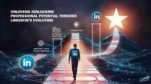
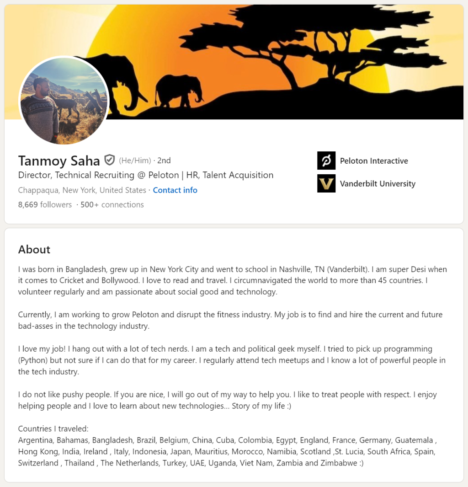
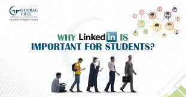
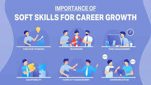
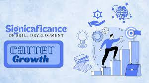

Linkedin is the world's largest professional networking platform, designed to connect individuals, businesses, and professionals. Founded in 2003 by Reid Hoffman, LinkedIn has evolved from a simple job-seeking site to a robust ecosystem supporting professional growth, learning, and collaboration. With over 900 million members worldwide, it is a powerful tool for students, job seekers, and organizations alike.LinkedIn empowers users to create a professional identity, explore career opportunities, and upskill themselves in a fast-evolving world. Whether you're a student, a seasoned professional, or an entrepreneur, LinkedIn can amplify your growth.
History of LinkedIn

Year
Key Milestone
2003
LinkedIn was launched as a networking platform.
2011
Reached 100 million users worldwide.
2016
Acquired by Microsoft for $26.2 billion.
2020
Introduced LinkedIn Learning for skill development.
2023
Surpassed 900 million users globally.
LinkedIn's journey has been one of continuous innovation, making it a leader in professional networking.
Features of LinkedIn
Features
Description
Benefits to students
Professional Profiles
Allows users to create profiles showcasing skills, experiences, and achievements.
Acts as a digital resume, helping students highlight their projects and internships.
Networking
Enables connections with professionals, peers, and mentors globally.
Students can connect with industry leaders for guidance and opportunities.
Job Search
Offers job postings tailored to skills and preferences.
Students can find internships, part-time jobs, and full-time roles.
LinkedIn Learning
Provides access to thousands of online courses in various domains.
Helps students learn in-demand skills like Python, AI, and data analysis.
Endorsements & Recommendations
Allows peers and mentors to validate skills and experiences.
Builds credibility and boosts chances of being noticed by recruiters.
Professional Profile Showcase(Eample)

How LinkedIn Benefits Society
LinkedIn isn’t just a platform for individuals; its impact is far-reaching across society:
Bridging Opportunity Gaps: LinkedIn connects individuals in remote areas to global opportunities, empowering them to achieve their professional dreams.
Promoting Lifelong Learning: With LinkedIn Learning, professionals can upskill themselves, ensuring they stay relevant in a rapidly changing job market.
Fostering Innovation: Communities and groups on LinkedIn encourage the sharing of ideas, sparking creativity and collaboration across industries
Driving Social Causes: Many organizations use LinkedIn to promote social initiatives and hire talent committed to creating a positive impact.
Why Students Should Use LinkedIn
For students, LinkedIn is a gateway to career success.

Key Benefit
How it Help Students
Example
Building a Personal Brand
Allows students to showcase their skills, projects, and achievements to a global audience.
Create a portfolio highlighting your UI/UX or Python projects.
Learning and Growth
Access to free and premium courses on industry-relevant topics.
Learn Python, AI concepts, and resume-building techniques.
Networking Opportunities
Interact with professionals, alumni, and mentors who can guide your career journey.
Join groups related to Full Stack Development to connect with experienced developers.
Internship/Job Search
Stay updated with internship openings and full-time job postings in your desired domain.
Apply for internships with companies looking for Full Stack Python Developers.
How LinkedIn Works

Create Your Profile:Add a professional photo, headline, and detailed description of your skills, education, and experience.
Build Connections: Start connecting with classmates, teachers, and industry professionals.
Engage with Content: Share posts, blogs, and projects to stay active and visible.
Search for Opportunities:Use LinkedIn’s advanced search to find internships, jobs, or freelance work.
Upskill Yourself: Explore courses on LinkedIn Learning to acquire new skills
How LinkedIn Works

LinkedIn offers a seamless experience for users to connect, grow, and succeed:
Profile Creation: Build a profile that highlights your education, skills, projects, certifications, and work experience. A complete profile increases visibility to recruiters and professionals.
Connecting and Networking: Use LinkedIn to connect with professionals in your field, alumni from your institution, or industry experts.
Skill Endorsements and Recommendations: Get your skills validated by colleagues and mentors, and ask for recommendations to enhance your credibility.
Content Sharing: Post updates, blogs, or achievements to engage your network. Sharing knowledge and experiences boosts your personal brand.
Job Search: Use the Jobs section to explore roles that match your skills. Save job postings and apply directly through LinkedIn.
LinkedIn Learning: Access thousands of courses on topics like programming, design, business management, and personal development to stay ahead in your career.
Why LinkedIn is a Must-Have Tool for Students
Benefit
How It Helps Students
Example
Digital Portfolio
Showcase skills, certifications, and projects to potential recruiters.
Highlight your work on projects like an e-commerce app or a Python blog platform.
Professional Exposure
Build connections with industry professionals to gain valuable insights.
Connect with a UI/UX expert to learn the latest design trends.
Skill Development
Access free and premium courses through LinkedIn Learning.
Learn cutting-edge technologies like AI, ML, and Full Stack Development.
Career Opportunities
Stay updated on internships, part-time, and full-time job postings in your domain of interest.
Apply for roles like Full Stack Python Developer.
Group Participation
Join LinkedIn groups to engage in discussions and learn from communities.
Join a group for aspiring developers or AI enthusiasts to gain insights and resources.
The Broader Impact of LinkedIn on Society
LinkedIn's contribution to society extends far beyond individual benefits.
Global Opportunities:
LinkedIn has bridged geographical boundaries, connecting talent in remote areas to global employers.
Empowering Underserved Communities: Through initiatives like LinkedIn Coaches, the platform helps underrepresented groups develop professional skills and access mentorship programs.
Knowledge Exchange: LinkedIn encourages thought leadership by enabling professionals to share articles, blogs, and videos. This fosters a culture of learning and innovation.
Boosting Startups and Small Businesses: Entrepreneurs use LinkedIn to promote their brands, connect with investors, and recruit talent, fostering economic growth.
Upskilling the Workforce: LinkedIn Learning ensures that professionals stay relevant in their fields by providing courses in areas like technology, management, and communication.
Facts About LinkedIn
LinkedIn is available in 24 languages, making it accessible to users worldwide.
More than 3 million companies have a LinkedIn page to attract talent and build brand presence.
The platform sees 2 new members every second, reflecting its rapid growth.
LinkedIn Learning offers over 16,000 courses, with new ones added regularly.
Why LinkedIn is an Ideal Platform for Students
Here’s how LinkedIn gives students a competitive edge:
Visibility:Recruiters often search for candidates on LinkedIn, making it an essential tool for job seekers.
Mentorship:Students can connect with alumni and professionals to seek career guidance.
Skill Validation:Certifications earned through LinkedIn Learning are directly added to profiles, enhancing credibility.
Networking Events:LinkedIn hosts virtual events, webinars, and group discussions where students can interact with professionals.
LinkedIn CEO's Inspiring Speech: A Vision for the Future of Networking
In this powerful speech, LinkedIn CEO Ryan Roslansky shares insights on the future of networking, innovation, and the evolving landscape of professional connections. He delves into the importance of digital platforms in shaping careers and how LinkedIn continues to play a pivotal role in empowering individuals and organizations.
The CEO discusses how LinkedIn is fostering opportunities for millions of professionals worldwide, and highlights the company's commitment to creating a more inclusive and connected world. With a focus on growth, technology, and resilience, this speech is a must-listen for anyone looking to understand the future of work and networking.
The Visionary Behind LinkedIn: A Message from the Founder
In addition to the inspiring speech from LinkedIn's CEO, it’s important to remember the vision that started it all. Reid Hoffman, the founder of LinkedIn, played a crucial role in shaping the professional networking landscape. His vision of connecting the world's professionals to make them more productive and successful has transformed the way we network and build careers today.
In this insightful video, Reid Hoffman shares his thoughts on the evolution of LinkedIn, the power of professional connections, and how LinkedIn has revolutionized the way people interact and collaborate in the digital age. His reflections offer a deep understanding of the company’s roots and its continuous drive toward innovation and growth.
LinkedIn: A Tool for Empowerment and Growth
LinkedIn has proven itself to be an indispensable platform for professionals and students alike. From connecting with industry leaders to providing educational resources, LinkedIn serves as a powerful tool for personal and professional growth. As we continue to navigate the evolving job market, LinkedIn remains at the forefront, helping individuals, businesses, and organizations shape their futures. Whether you are a student seeking internships or a professional expanding your network, LinkedIn offers unmatched opportunities to connect, learn, and thrive.
Conclusion: Empowering Connections for the Future
As we look ahead, the lessons shared by LinkedIn’s CEO and founder, Reid Hoffman, remind us of the power of professional networks in shaping opportunities and driving innovation. With continuous growth, LinkedIn remains at the forefront of transforming the way professionals connect, collaborate, and succeed.
Stay inspired, stay connected, and leverage the power of LinkedIn to unlock your potential.